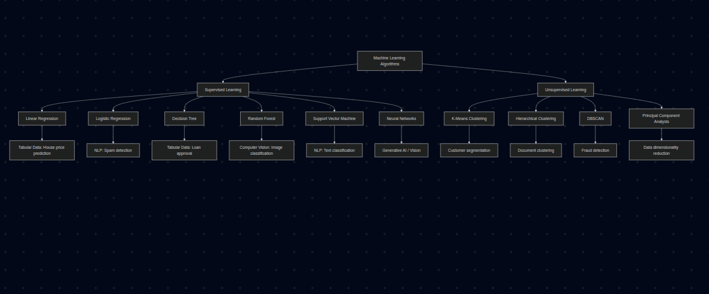

Artifact: Machine Learning Algorithms Visual Framework
This artifact presents a visual framework of common machine learning algorithms categorized into supervised and unsupervised learning methods. The purpose of this artifact is to organize key machine learning models and demonstrate how they are applied in real-world domains such as tabular data, computer vision, natural language processing (NLP), and generative AI.
Algorithms Included
- Linear Regression
- Logistic Regression
- Decision Tree
- Random Forest
- Support Vector Machine
- Neural Networks
- K-Means Clustering
- Hierarchical Clustering
- DBSCAN
- Principal Component Analysis (PCA)

Key Learning Takeaways
- Understanding the difference between supervised and unsupervised learning.
- Recognizing when regression vs classification models should be used.
- Exploring clustering algorithms for pattern discovery in unlabeled data.
- Connecting machine learning models to real-world domains like NLP and computer vision.